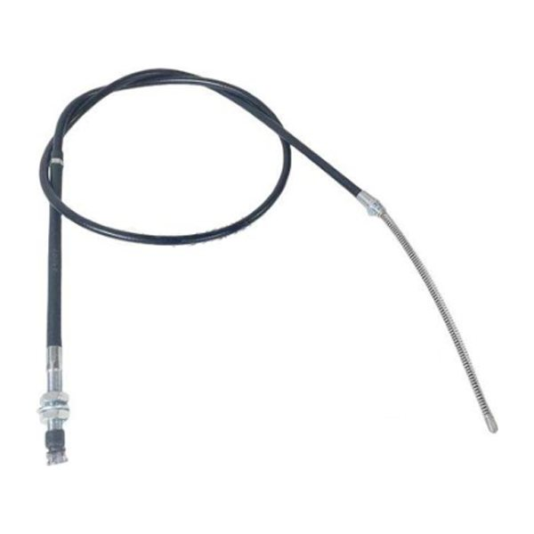

Available
Email for a quote
Toyota 41087-404 Cable
| OEM part number | 41087-404 |
| Fits | Toyota |
| Models / notes | 8FD/G30 ATM (RH ) |
| Category | Brakes |
| Type | Aftermarket replacement |
Send us the quantity you need and we'll reply with pricing, usually within 24 hours. Not the exact part? We can source it. Send the part number or a photo.